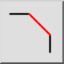
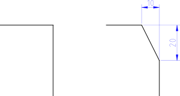

Ez egy automatikus fordítás.
Letörés
Eszköztár / ikon:


Menü: Módosítás > Letörés
Rövidítés: C, H
Parancsok: bevel | chamfer | ch
Leírás
Leélezi a két elem által alkotott sarkot. Opcionálisan a sarok élelemei automatikusan levághatók az új alak illesztéséhez.

Használat
- Adja meg a leélezés geometriáját a felső eszköztárban. A „Távolság 1” az a távolság, amelyre a leélezési vonal a két él (képzeletbeli) metszéspontjától lesz (10 a bemutatott példában). A „Távolság 2” ugyanez a távolság a második élnél (20 a bemutatott példában).
- Jelölje be a „Vágás” lehetőséget, ha az elemeket automatikusan szeretné vágni. Ha a beállítás le van tiltva, a két elem érintetlen marad.
- Válassza ki az első élelemet (egy vonalat vagy egy ívet).
- Válassza ki a második elemet.